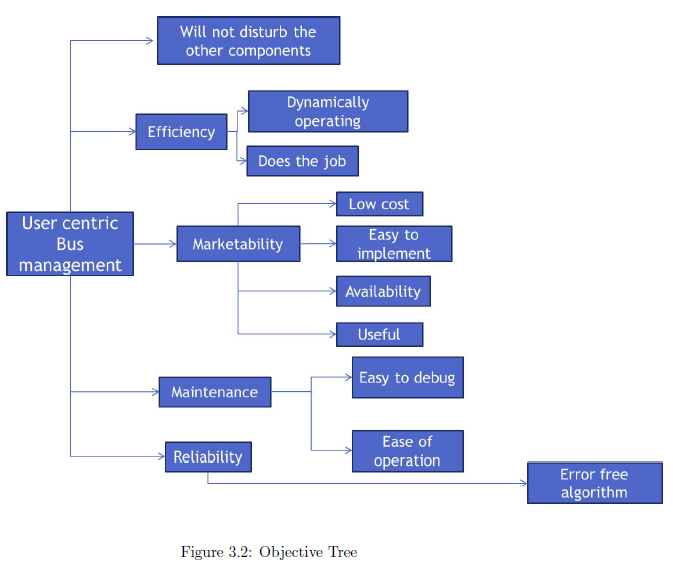

<html>
	<head>
		<title>User Centric Bus Management</title>
		<meta http-equiv="Content-Type" content="text/html; charset=iso-8859-15" />
	</head>

        <body>
	<div id="conteneur">
		  <h1>User Centric Bus Management</h1>

                      <a href="report.pdf">Click Here to open the Report PDF!</a>
		  <div id="haut">
		  <br><br>
		  <h2>Project Team Member</h2>
			<ul class="menuhaut">
				<li><a>Darshan S Patil (2BV12EC029)</a></li>
                                <li><a>Akhil A Naik (2BV12EC007)</a></li>
                                <li><a>Kamranahmed M Badebade (2BV12EC037)</a></li>
			</ul>
			<br><br>

		  <h2>Contents</h2>
			<ul class="menuhaut">
				<li><a href="#abstract">Abstract</a></li>
                                <li><a href="#intro">Introduction</a></li>
				<li><a href="#literature">Literature survey</a></li>
				<li><a href="#methodology">Methodology</a></li>
				<li><a href="#proposed">Proposed Methodology</a></li>
				<li><a href="#results">Results</a></li>
				<li><a href="#conclusion">Conclusion</a></li>
			</ul>
		  </div>
                   <br><br>
		  <div id="centre">
			<h2 id="abstract">Abstract</h2>
			<p align="justify">The primary challenge for an urban bus system is to maintain constant headways between successive buses.
                        Most bus systems try to achieve this by adherence to a schedule; but this is undermined by the tendency of headways
                         to collapse, so that buses travel in bunches. Making use of the GPS, the unit which are freshly incorporated in the bus
                          transport system, we can send the real time position of the bus. By making use of simple timer system (basically a micro-controller)
                           which is loaded with time interval (pre-calculated for various traffic conditions) for traveling from one stop to adjacent.
                           This time interval is displayed to the driver using display board which suggests him, about timing he has to maintain so that
                            he efficiently maintains regularity and bus bunching problem is solved. Using Internet of things(IOT) the transportation system
                             can be made more effective and reliable.</p>
			<br><br>
  	                  <h2 id="intro">Introduction</h2>
                          <h4>Objective</h4>
 			<p align="justify">The objective of the project is to send the real time location of buses and taking the distance
                          between the buses as constant parameter, we are calculating the timings which are to be maintained in order to avoid
                          bunching of buses. These timings will be displayed on to the driver so as to notify him and this timing is calculated
                           based on other bus locations and traffic conditions.</p>
                           <h4>General Description</h4>
 			<p align="justify">The project makes use of GPS and GSM module along with the support of a dedicated server which runs the
                         algorithm, written to monitor actual locations of the buses and maintain the scheduling in order to avoid bus bunching.</p>
                           <br><br>
                         <h2 id="literature">Literature Survey</h2>
                          <h4>Existing Methodology</h4>
 			<p align="justify">The existing methodology to solve the concerned problem basically consists of following the schedule
                         maintained by the bus transit system.</p>

                           <h4>Proposed Methodology</h4>
 			<p align="justify">To solve bus bunching, we are making use of GPS units to nd the location of the bus, after learning the
                         location of the bus we send that information to the server which will have record of real time location of all the buses, server
                         is designed with algorithm which calculates the timings which driver needs to follow while traveling to the successive stop.
                         Timings are calculated keeping the location of the preceding and successive buses, also making sure the timings are conditions.
                          By doing this we efficiently reduce the over crowded buses and bus traveling in bunches.</p>
                          <h4>Problem Statement</h4>
 			 <p align="justify">The primary challenge for an urban bus system is to maintain constant headways between successive buses.
                          Most bus systems try to achieve this by adherence to a schedule; but this is undermined by the tendency of headways to collapse,
                           so that buses travel in bunches. Bus bunching is a serious problem, often observed in public transport system where buses are
                            unscheduled and travel in bunched manner causing losses to transport management and discomfort to travelers.</p>
                        <br><br>
                         <h2 id="methodology">Methodology</h2>
                          <br>
                          <br><br><br>
                          <br><br><br>
                          <br><br><br>


                          <br><br><br>
                         <h2 id="proposed">Proposed Methodology</h2>
                            <h4>Block Diagram</h4>
                            <br>

                            <br>
                          <h4>Working</h4>
 			<p align="justify">Making use of the GPS unit which are freshly incorporated in the bus transport system, we can and the
                          real time position of the bus. GPS stands for Global Postioning System. GPS module is used to get the location interms
                          of latitude and longitude. However GPS also gives a lot of information like date,time(in UTC), no of satellites which are
                           coded in NMEA(National Marine Electronics Association)string. GPS module can communicate with the host system(or the microcontroller)
                            in binary or via NMEA01823 protocol. All current GPS modules are based on NMEA protocol.</p>
                           <p align="justify">
                            To send the GPS data(i.e latitude and longitude) to server GSM/GPRS module is used. The GSM/GPRS module connects
                            microcontroller to the internet using the GPRS wireless network. Just connect the module to the microcontroller,
                             plug in a SIM card from an operator offering GPRS coverage and this helps us to monitor bus position through a dedicated
                              server. By making use of simple timer system (basically a microcontroller) which is loaded with time interval
                              (decided by the algorithm in the server) for travelling from one stop to adjacent. This time interval is displayed to the
                               driver using display board which suggests him, about timing he has to maintain so that he efficiently maintains regularity
                               and bus bunching problem is solved.
                           </p>

                           <h4>What does server do?</h4>
 			<p align="justify">There are a number of different types of servers, including Web servers, mail servers, and file servers.
                         A web server serves Web pages to computers that connect to it. It also can parse scripting languages such as PHP, ASP, and JSP.
                         We are going to develop a web server to monitor the bus location and look for bus bunching occurrence, store the information about
                          the buses in database and provides the calculated timing information to the micro-controller which loads it and displays on the timer
                           LCD board.We are using WAMP tool to create a Apache web server.WAMP is abbreviation for Windows, Apache, MySQL, and PHP, These
                           abbreviations describe a fully functioning setup used for developing dynamic Internet web pages.The real beauty of PHP, MySQL,
                           JavaScript, CSS, and HTML5 is the wonderful way in which they all work together to produce dynamic web content: PHP handles all
                            the main work on the web server, MySQL manages all the data, and the combination of CSS and JavaScript looks after web page
                             presentation. JavaScript can also interact with PHP code on the web server whenever it needs to update something.The combination
                              of PHP and MySQL is the most convenient approach to dynamic, database-driven web design, holding its own in the face of challenge
                              s from integrated frameworks. Due to its open source roots, it is free to implement and is therefore an extremely popular option
                               for web development. </p>

                         <h4>Simulation</h4>
 			 

                         <br><br><br>
                         <h2 id="results">Results</h2>
                          <br>
                          <br><br><br><br>
                          <br><br><br><br>
                          <br><br><br><br>
                          <br><br><br><br>


                           <br><br><br>
                         <h2 id="conclusion">Conclusion</h2>
                          <p align="justify">Using Internet of things(IOT) the transportation system can be made more effective and reliable. Making use of
                           a dedicated server which runs the algorithm and thus making the technology more ecient and reliable without any
                           glitches. With bus bunching solved the number buses for efficient transportation can be reduced in turn reducing the heavy traffic.
                            Hence traffic decongestion is observed. </p>
			<br><br><br><br><br> <br><br><br><br><br><br><br><br><br>
			</div>
<!--		<div id="pied">Design by <a href="http://nicolas.freezee.org">Nicolas Fafchamps</a></div>       -->
	</div>
	</body>
</html>
